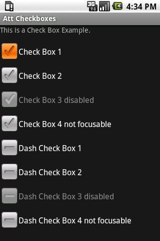

The checkbox UI element is a simple customizable checkbox UI element. The following image shows some examples:

You need to create a new com.att.widget.Checkbox object and add it to your view or layout.
Create a container to hold the checkboxes and then add com.att.widgets.lib.button.CheckBox tags to the layout.
<?xml version="1.0" encoding="UTF-8"?> <LinearLayout xmlns:android="http://schemas.android.com/apk/res/android" xmlns:att="http://schemas.android.com/apk/res/com.att.checkbox" android:layout_width="wrap_content" android:layout_height="wrap_content" android:orientation="vertical" > <!-- First example of the screenshot --> <com.att.widgets.lib.button.CheckBox android:id="@+id/checkbox" android:layout_width="wrap_content" android:layout_height="wrap_content" android:text="Check Box 1" /> <!-- Third example of the screenshot --> <com.att.widgets.lib.button.CheckBox android:id="@+id/checkbox3" android:layout_width="wrap_content" android:layout_height="wrap_content" android:text="Check Box 3 disabled" android:enabled="false" /> <!-- Fifth example of the screenshot --> <com.att.widgets.lib.button.CheckBox android:id="@+id/checkbox_dash" android:layout_width="wrap_content" android:layout_height="wrap_content" android:text="Dash Check Box 1" att:is_dash="true" /> </LinearLayout>
There are 2 styles of checkbox (predefined and dashed style ), you can change the predefined style with the is_dash property.
| Property | Default Value | Description |
|---|---|---|
| is_dash | false | If this value is set to true, you'll get a look and feel like the 5th thru 8th examples in the screenshot. If it is not set or set to false, then the 1st thru 4th examples' look and feel will be assigned to your checkbox. |
You may change the text color of the checkbox label with the textColor attribute
<com.att.widgets.lib.button.CheckBox android:id="@+id/checkbox_dash" android:layout_width="wrap_content" android:layout_height="wrap_content" android:text="Dash Check Box 1" att:is_dash="true" android:textColor="#000000" />